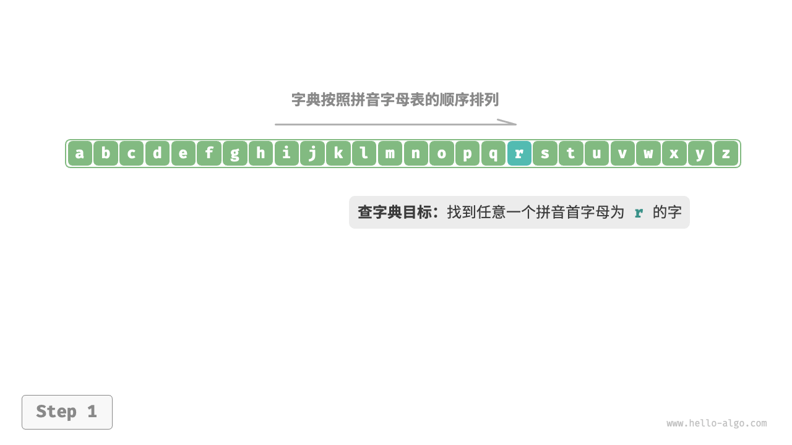
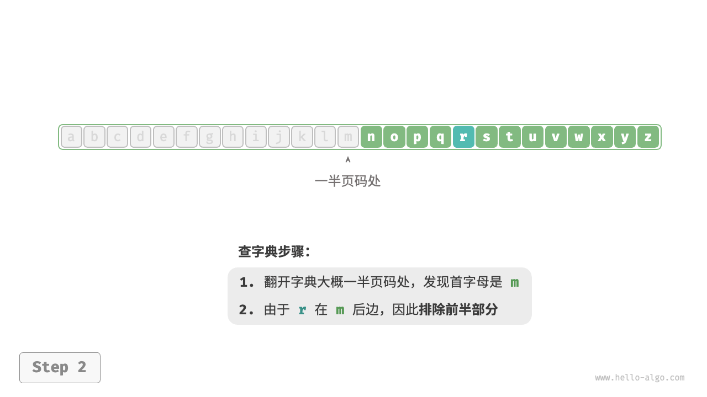
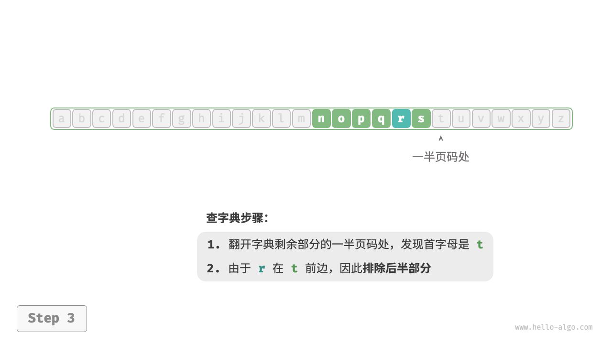
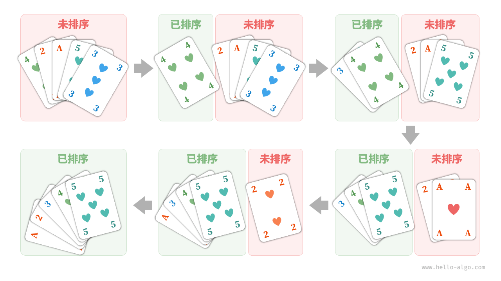
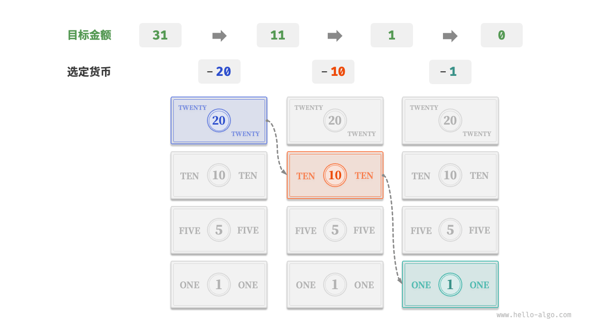
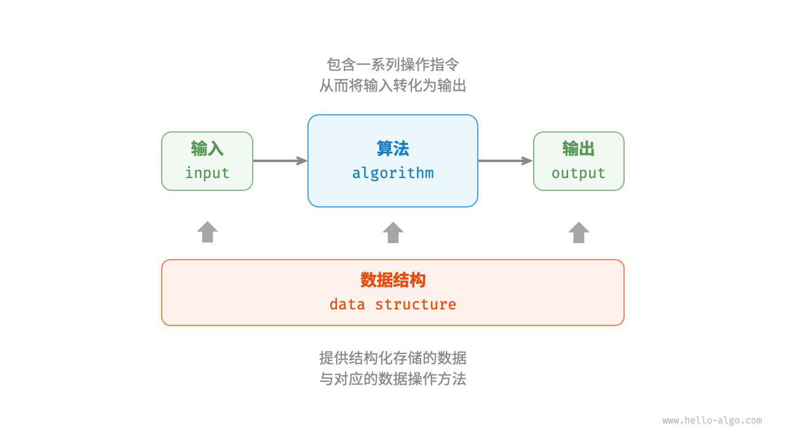
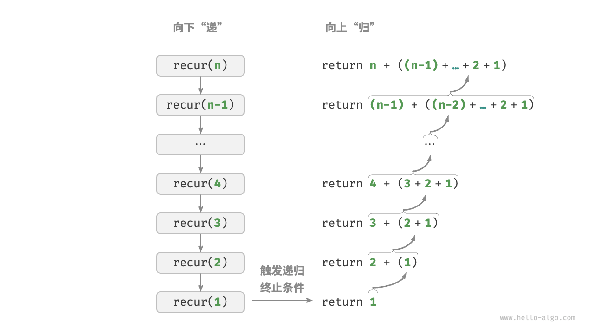
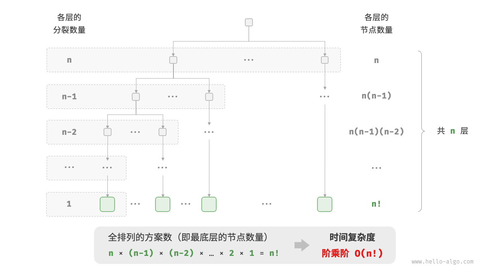

初识算法
算法无处不在
当我们听到“算法”这个词时，很自然地会想到数学。然而实际上，许多算法并不涉及复杂数学，而是更多地依赖基本逻辑，这些逻辑在我们的日常生活中处处可见。
在正式探讨算法之前，有一个有趣的事实值得分享：你已经在不知不觉中学会了许多算法，并习惯将它们应用到日常生活中了。下面我将举几个具体的例子来证实这一点。
例一：查字典。在字典里，每个汉字都对应一个拼音，而字典是按照拼音字母顺序排列的。假设我们需要查找一个拼音首字母为 𝑟 的字，通常会按照图 1-1 所示的方式实现。
- 翻开字典约一半的页数，查看该页的首字母是什么，假设首字母为 𝑚 。
- 由于在拼音字母表中 𝑟 位于 𝑚 之后，所以排除字典前半部分，查找范围缩小到后半部分。
- 不断重复步骤
1.和 步骤2.，直至找到拼音首字母为 𝑟 的页码为止。





个小学生必备技能，实际上就是著名的“二分查找”算法。从数据结构的角度，我们可以把字典视为一个已排序的“数组”；从算法的角度，我们可以将上述查字典的一系列操作看作“二分查找”。
例二：整理扑克。我们在打牌时，每局都需要整理手中的扑克牌，使其从小到大排列，实现流程如图 1-2 所示。
- 将扑克牌划分为“有序”和“无序”两部分，并假设初始状态下最左 1 张扑克牌已经有序。
- 在无序部分抽出一张扑克牌，插入至有序部分的正确位置；完成后最左 2 张扑克已经有序。
- 不断循环步骤
2.，每一轮将一张扑克牌从无序部分插入至有序部分，直至所有扑克牌都有序。

上述整理扑克牌的方法本质上是“插入排序”算法，它在处理小型数据集时非常高效。许多编程语言的排序库函数中都有插入排序的身影。
例三：货币找零。假设我们在超市购买了 69 元的商品，给了收银员 100 元，则收银员需要找我们 31 元。他会很自然地完成如图 1-3 所示的思考。
- 可选项是比 31 元面值更小的货币，包括 1 元、5 元、10 元、20 元。
- 从可选项中拿出最大的 20 元，剩余 31−20=11 元。
- 从剩余可选项中拿出最大的 10 元，剩余 11−10=1 元。
- 从剩余可选项中拿出最大的 1 元，剩余 1−1=0 元。
- 完成找零，方案为 20+10+1=31 元。

在以上步骤中，我们每一步都采取当前看来最好的选择（尽可能用大面额的货币），最终得到了可行的找零方案。从数据结构与算法的角度看，这种方法本质上是“贪心”算法。
小到烹饪一道菜，大到星际航行，几乎所有问题的解决都离不开算法。计算机的出现使得我们能够通过编程将数据结构存储在内存中，同时编写代码调用 CPU 和 GPU 执行算法。这样一来，我们就能把生活中的问题转移到计算机上，以更高效的方式解决各种复杂问题。
算法是什么
算法定义
算法（algorithm）是在有限时间内解决特定问题的一组指令或操作步骤，它具有以下特性。
- 问题是明确的，包含清晰的输入和输出定义。
- 具有可行性，能够在有限步骤、时间和内存空间下完成。
- 各步骤都有确定的含义，在相同的输入和运行条件下，输出始终相同。
数据结构定义
数据结构（data structure）是计算机中组织和存储数据的方式，具有以下设计目标。
- 空间占用尽量少，以节省计算机内存。
- 数据操作尽可能快速，涵盖数据访问、添加、删除、更新等。
- 提供简洁的数据表示和逻辑信息，以便算法高效运行。
数据结构设计是一个充满权衡的过程。如果想在某方面取得提升，往往需要在另一方面作出妥协。下面举两个例子。
- 链表相较于数组，在数据添加和删除操作上更加便捷，但牺牲了数据访问速度。
- 图相较于链表，提供了更丰富的逻辑信息，但需要占用更大的内存空间。
数据结构与算法的关系
数据结构与算法高度相关、紧密结合，具体表现在以下三个方面。
- 数据结构是算法的基石。数据结构为算法提供了结构化存储的数据，以及操作数据的方法。
- 算法是数据结构发挥作用的舞台。数据结构本身仅存储数据信息，结合算法才能解决特定问题。
- 算法通常可以基于不同的数据结构实现，但执行效率可能相差很大，选择合适的数据结构是关键。

值得说明的是，数据结构与算法是独立于编程语言的。
小结
- 算法在日常生活中无处不在，并不是遥不可及的高深知识。实际上，我们已经在不知不觉中学会了许多算法，用以解决生活中的大小问题。
- 查字典的原理与二分查找算法相一致。二分查找算法体现了分而治之的重要算法思想。
- 整理扑克的过程与插入排序算法非常类似。插入排序算法适合排序小型数据集。
- 货币找零的步骤本质上是贪心算法，每一步都采取当前看来最好的选择。
- 算法是在有限时间内解决特定问题的一组指令或操作步骤，而数据结构是计算机中组织和存储数据的方式。
- 数据结构与算法紧密相连。数据结构是算法的基石，而算法是数据结构发挥作用的舞台。
- 我们可以将数据结构与算法类比为拼装积木，积木代表数据，积木的形状和连接方式等代表数据结构，拼装积木的步骤则对应算法。
Q&A
Q：作为一名程序员，我在日常工作中从未用算法解决过问题，常用算法都被编程语言封装好了，直接用就可以了；这是否意味着我们工作中的问题还没有到达需要算法的程度？
如果把具体的工作技能比作是武功的“招式”的话，那么基础科目应该更像是“内功”。
我认为学算法（以及其他基础科目）的意义不是在于在工作中从零实现它，而是基于学到的知识，在解决问题时能够作出专业的反应和判断，从而提升工作的整体质量。举一个简单例子，每种编程语言都内置了排序函数：
- 如果我们没有学过数据结构与算法，那么给定任何数据，我们可能都塞给这个排序函数去做了。运行顺畅、性能不错，看上去并没有什么问题。
- 但如果学过算法，我们就会知道内置排序函数的时间复杂度是 𝑂(𝑛log𝑛) ；而如果给定的数据是固定位数的整数（例如学号），那么我们就可以用效率更高的“基数排序”来做，将时间复杂度降为 𝑂(𝑛𝑘) ，其中 𝑘 为位数。当数据体量很大时，节省出来的运行时间就能创造较大价值（成本降低、体验变好等）。
在工程领域中，大量问题是难以达到最优解的，许多问题只是被“差不多”地解决了。问题的难易程度一方面取决于问题本身的性质，另一方面也取决于观测问题的人的知识储备。人的知识越完备、经验越多，分析问题就会越深入，问题就能被解决得更优雅。
复杂度分析
算法效率评估
在算法设计中，我们先后追求以下两个层面的目标。
- 找到问题解法：算法需要在规定的输入范围内可靠地求得问题的正确解。
- 寻求最优解法：同一个问题可能存在多种解法，我们希望找到尽可能高效的算法。
也就是说，在能够解决问题的前提下，算法效率已成为衡量算法优劣的主要评价指标，它包括以下两个维度。
- 时间效率：算法运行速度的快慢。
- 空间效率：算法占用内存空间的大小。
简而言之，我们的目标是设计“既快又省”的数据结构与算法。而有效地评估算法效率至关重要，因为只有这样，我们才能将各种算法进行对比，进而指导算法设计与优化过程。
效率评估方法主要分为两种：实际测试、理论估算。
实际测试
假设我们现在有算法 A 和算法 B ，它们都能解决同一问题，现在需要对比这两个算法的效率。最直接的方法是找一台计算机，运行这两个算法，并监控记录它们的运行时间和内存占用情况。这种评估方式能够反映真实情况，但也存在较大的局限性。
一方面，难以排除测试环境的干扰因素。硬件配置会影响算法的性能。比如在某台计算机中，算法 A 的运行时间比算法 B 短；但在另一台配置不同的计算机中，可能得到相反的测试结果。这意味着我们需要在各种机器上进行测试，统计平均效率，而这是不现实的。
另一方面，展开完整测试非常耗费资源。随着输入数据量的变化，算法会表现出不同的效率。例如，在输入数据量较小时，算法 A 的运行时间比算法 B 短；而在输入数据量较大时，测试结果可能恰恰相反。因此，为了得到有说服力的结论，我们需要测试各种规模的输入数据，而这需要耗费大量的计算资源。
理论估算
由于实际测试具有较大的局限性，因此我们可以考虑仅通过一些计算来评估算法的效率。这种估算方法被称为渐近复杂度分析（asymptotic complexity analysis），简称复杂度分析。
复杂度分析能够体现算法运行所需的时间和空间资源与输入数据大小之间的关系。它描述了随着输入数据大小的增加，算法执行所需时间和空间的增长趋势。这个定义有些拗口，我们可以将其分为三个重点来理解。
- “时间和空间资源”分别对应时间复杂度（time complexity）和空间复杂度（space complexity）。
- “随着输入数据大小的增加”意味着复杂度反映了算法运行效率与输入数据体量之间的关系。
- “时间和空间的增长趋势”表示复杂度分析关注的不是运行时间或占用空间的具体值，而是时间或空间增长的“快慢”。
复杂度分析克服了实际测试方法的弊端，体现在以下两个方面。
- 它独立于测试环境，分析结果适用于所有运行平台。
- 它可以体现不同数据量下的算法效率，尤其是在大数据量下的算法性能。
复杂度分析为我们提供了一把评估算法效率的“标尺”，使我们可以衡量执行某个算法所需的时间和空间资源，对比不同算法之间的效率。
复杂度是个数学概念，对于初学者可能比较抽象，学习难度相对较高。从这个角度看，复杂度分析可能不太适合作为最先介绍的内容。然而，当我们讨论某个数据结构或算法的特点时，难以避免要分析其运行速度和空间使用情况。
综上所述，建议你在深入学习数据结构与算法之前，先对复杂度分析建立初步的了解，以便能够完成简单算法的复杂度分析。
迭代与递归
在算法中，重复执行某个任务是很常见的，它与复杂度分析息息相关。因此，在介绍时间复杂度和空间复杂度之前，我们先来了解如何在程序中实现重复执行任务，即两种基本的程序控制结构：迭代、递归。
迭代
迭代（iteration）是一种重复执行某个任务的控制结构。在迭代中，程序会在满足一定的条件下重复执行某段代码，直到这个条件不再满足。
for 循环
for 循环是最常见的迭代形式之一，适合在预先知道迭代次数时使用。以下函数基于 for 循环实现了求和 1+2+⋯+𝑛 ，求和结果使用变量 res 记录。
|
|
下图是是该求和函数的流程框图。

此求和函数的操作数量与输入数据大小 𝑛 成正比，或者说成“线性关系”。实际上，时间复杂度描述的就是这个“线性关系”。
while循环
与 for 循环类似，while 循环也是一种实现迭代的方法。在 while 循环中，程序每轮都会先检查条件，如果条件为真，则继续执行，否则就结束循环。下面我们用 while 循环来实现求和 1+2+⋯+𝑛 ：
|
|
while 循环比 for 循环的自由度更高。在 while 循环中，我们可以自由地设计条件变量的初始化和更新步骤。
例如在以下代码中，条件变量 𝑖 每轮进行两次更新，这种情况就不太方便用 for 循环实现：
|
|
总的来说，for 循环的代码更加紧凑，while 循环更加灵活，两者都可以实现迭代结构。选择使用哪一个应该根据特定问题的需求来决定。
嵌套循环
我们可以在一个循环结构内嵌套另一个循环结构，下面以 for 循环为例：
|
|
下图是该嵌套循环的流程框图。

在这种情况下，函数的操作数量与 𝑛2 成正比，或者说算法运行时间和输入数据大小 𝑛 成“平方关系”。我们可以继续添加嵌套循环，每一次嵌套都是一次“升维”，将会使时间复杂度提高至“立方关系”“四次方关系”，以此类推。
递归
递归（recursion）是一种算法策略，通过函数调用自身来解决问题。它主要包含两个阶段。
- 递：程序不断深入地调用自身，通常传入更小或更简化的参数，直到达到“终止条件”。
- 归：触发“终止条件”后，程序从最深层的递归函数开始逐层返回，汇聚每一层的结果。
而从实现的角度看，递归代码主要包含三个要素。
- 终止条件：用于决定什么时候由“递”转“归”。
- 递归调用：对应“递”，函数调用自身，通常输入更小或更简化的参数。
- 返回结果：对应“归”，将当前递归层级的结果返回至上一层。
观察以下代码，我们只需调用函数 recur(n) ，就可以完成 1+2+⋯+𝑛 的计算：
|
|
图 2-3 展示了该函数的递归过程。

虽然从计算角度看，迭代与递归可以得到相同的结果，但它们代表了两种完全不同的思考和解决问题的范式。
- 迭代：“自下而上”地解决问题。从最基础的步骤开始，然后不断重复或累加这些步骤，直到任务完成。
- 递归：“自上而下”地解决问题。将原问题分解为更小的子问题，这些子问题和原问题具有相同的形式。接下来将子问题继续分解为更小的子问题，直到基本情况时停止（基本情况的解是已知的）。
以上述求和函数为例，设问题 𝑓(𝑛)=1+2+⋯+𝑛 。
- 迭代：在循环中模拟求和过程，从 1 遍历到 𝑛 ，每轮执行求和操作，即可求得 𝑓(𝑛) 。
- 递归：将问题分解为子问题 𝑓(𝑛)=𝑛+𝑓(𝑛−1) ，不断（递归地）分解下去，直至基本情况 𝑓(1)=1 时终止。
调用栈
递归函数每次调用自身时，系统都会为新开启的函数分配内存，以存储局部变量、调用地址和其他信息等。这将导致两方面的结果。
- 函数的上下文数据都存储在称为“栈帧空间”的内存区域中，直至函数返回后才会被释放。因此，递归通常比迭代更加耗费内存空间。
- 递归调用函数会产生额外的开销。因此递归通常比循环的时间效率更低。
如图 2-4 所示，在触发终止条件前，同时存在 𝑛 个未返回的递归函数，递归深度为 𝑛 。

在实际中，编程语言允许的递归深度通常是有限的，过深的递归可能导致栈溢出错误。
尾递归
有趣的是，如果函数在返回前的最后一步才进行递归调用，则该函数可以被编译器或解释器优化，使其在空间效率上与迭代相当。这种情况被称为尾递归（tail recursion）。
- 普通递归：当函数返回到上一层级的函数后，需要继续执行代码，因此系统需要保存上一层调用的上下文。
- 尾递归：递归调用是函数返回前的最后一个操作，这意味着函数返回到上一层级后，无须继续执行其他操作，因此系统无须保存上一层函数的上下文。
以计算 1+2+⋯+𝑛 为例，我们可以将结果变量 res 设为函数参数，从而实现尾递归：
|
|
尾递归的执行过程如图 2-5 所示。对比普通递归和尾递归，两者的求和操作的执行点是不同的。
- 普通递归：求和操作是在“归”的过程中执行的，每层返回后都要再执行一次求和操作。
- 尾递归：求和操作是在“递”的过程中执行的，“归”的过程只需层层返回。

递归树
当处理与“分治”相关的算法问题时，递归往往比迭代的思路更加直观、代码更加易读。以“斐波那契数列”为例。
给定一个斐波那契数列 0,1,1,2,3,5,8,13,… ，求该数列的第 𝑛 个数字。
设斐波那契数列的第 𝑛 个数字为 𝑓(𝑛) ，易得两个结论。
- 数列的前两个数字为 𝑓(1)=0 和 𝑓(2)=1 。
- 数列中的每个数字是前两个数字的和，即 𝑓(𝑛)=𝑓(𝑛−1)+𝑓(𝑛−2) 。
按照递推关系进行递归调用，将前两个数字作为终止条件，便可写出递归代码。调用 fib(n) 即可得到斐波那契数列的第 𝑛 个数字：
|
|
观察以上代码，我们在函数内递归调用了两个函数，这意味着从一个调用产生了两个调用分支。如图 2-6 所示，这样不断递归调用下去，最终将产生一棵层数为 𝑛 的递归树（recursion tree）。

从本质上看，递归体现了“将问题分解为更小子问题”的思维范式，这种分治策略至关重要。
- 从算法角度看，搜索、排序、回溯、分治、动态规划等许多重要算法策略直接或间接地应用了这种思维方式。
- 从数据结构角度看，递归天然适合处理链表、树和图的相关问题，因为它们非常适合用分治思想进行分析。
迭代和递归的对比
总结以上内容，如表 2-1 所示，迭代和递归在实现、性能和适用性上有所不同。
表 2-1 迭代与递归特点对比
| 迭代 | 递归 | |
|---|---|---|
| 实现方式 | 循环结构 | 函数调用自身 |
| 时间效率 | 效率通常较高，无函数调用开销 | 每次函数调用都会产生开销 |
| 内存使用 | 通常使用固定大小的内存空间 | 累积函数调用可能使用大量的栈帧空间 |
| 适用问题 | 适用于简单循环任务，代码直观、可读性好 | 适用于子问题分解，如树、图、分治、回溯等，代码结构简洁、清晰 |
那么，迭代和递归具有什么内在联系呢？以上述递归函数为例，求和操作在递归的“归”阶段进行。这意味着最初被调用的函数实际上是最后完成其求和操作的，这种工作机制与栈的“先入后出”原则异曲同工。
事实上，“调用栈”和“栈帧空间”这类递归术语已经暗示了递归与栈之间的密切关系。
- 递：当函数被调用时，系统会在“调用栈”上为该函数分配新的栈帧，用于存储函数的局部变量、参数、返回地址等数据。
- 归：当函数完成执行并返回时，对应的栈帧会被从“调用栈”上移除，恢复之前函数的执行环境。
因此，我们可以使用一个显式的栈来模拟调用栈的行为，从而将递归转化为迭代形式：
|
|
观察以上代码，当递归转化为迭代后，代码变得更加复杂了。尽管迭代和递归在很多情况下可以互相转化，但不一定值得这样做，有以下两点原因。
- 转化后的代码可能更加难以理解，可读性更差。
- 对于某些复杂问题，模拟系统调用栈的行为可能非常困难。
总之，选择迭代还是递归取决于特定问题的性质。在编程实践中，权衡两者的优劣并根据情境选择合适的方法至关重要。
时间复杂度
运行时间可以直观且准确地反映算法的效率。如果我们想准确预估一段代码的运行时间，应该如何操作呢？
- 确定运行平台，包括硬件配置、编程语言、系统环境等，这些因素都会影响代码的运行效率。
- 评估各种计算操作所需的运行时间，例如加法操作
+需要 1 ns ，乘法操作*需要 10 ns ，打印操作print()需要 5 ns 等。 - 统计代码中所有的计算操作，并将所有操作的执行时间求和，从而得到运行时间。
例如在以下代码中，输入数据大小为 𝑛 ：
|
|
根据以上方法，可以得到算法的运行时间为 (6𝑛+12) ns ：
1+1+10+(1+5)×𝑛=6𝑛+12
但实际上，统计算法的运行时间既不合理也不现实。首先，我们不希望将预估时间和运行平台绑定，因为算法需要在各种不同的平台上运行。其次，我们很难获知每种操作的运行时间，这给预估过程带来了极大的难度。
统计时间增长趋势
时间复杂度分析统计的不是算法运行时间，而是算法运行时间随着数据量变大时的增长趋势。
“时间增长趋势”这个概念比较抽象，我们通过一个例子来加以理解。假设输入数据大小为 𝑛 ，给定三个算法 A、B 和 C ：
|
|
图 2-7 展示了以上三个算法函数的时间复杂度。
- 算法
A只有 1 个打印操作，算法运行时间不随着 𝑛 增大而增长。我们称此算法的时间复杂度为“常数阶”。 - 算法
B中的打印操作需要循环 𝑛 次，算法运行时间随着 𝑛 增大呈线性增长。此算法的时间复杂度被称为“线性阶”。 - 算法
C中的打印操作需要循环 1000000 次，虽然运行时间很长，但它与输入数据大小 𝑛 无关。因此C的时间复杂度和A相同，仍为“常数阶”。

相较于直接统计算法的运行时间，时间复杂度分析有哪些特点呢？
- 时间复杂度能够有效评估算法效率。例如，算法
B的运行时间呈线性增长，在 𝑛>1 时比算法A更慢，在 𝑛>1000000 时比算法C更慢。事实上，只要输入数据大小 𝑛 足够大，复杂度为“常数阶”的算法一定优于“线性阶”的算法，这正是时间增长趋势的含义。 - 时间复杂度的推算方法更简便。显然，运行平台和计算操作类型都与算法运行时间的增长趋势无关。因此在时间复杂度分析中，我们可以简单地将所有计算操作的执行时间视为相同的“单位时间”，从而将“计算操作运行时间统计”简化为“计算操作数量统计”，这样一来估算难度就大大降低了。
- 时间复杂度也存在一定的局限性。例如，尽管算法
A和C的时间复杂度相同，但实际运行时间差别很大。同样，尽管算法B的时间复杂度比C高，但在输入数据大小 𝑛 较小时，算法B明显优于算法C。在这些情况下，我们很难仅凭时间复杂度判断算法效率的高低。当然，尽管存在上述问题，复杂度分析仍然是评判算法效率最有效且常用的方法。
函数渐进上届
给定一个输入大小为 𝑛 的函数：
|
|
设算法的操作数量是一个关于输入数据大小 𝑛 的函数，记为 𝑇(𝑛) ，则以上函数的操作数量为：
𝑇(𝑛)=3+2𝑛
𝑇(𝑛) 是一次函数，说明其运行时间的增长趋势是线性的，因此它的时间复杂度是线性阶。
我们将线性阶的时间复杂度记为 𝑂(𝑛) ，这个数学符号称为大 𝑂 记号（big-𝑂 notation），表示函数 𝑇(𝑛) 的渐近上界（asymptotic upper bound）。
时间复杂度分析本质上是计算“操作数量 𝑇(𝑛)”的渐近上界，它具有明确的数学定义。
函数渐近上界
若存在正实数 𝑐 和实数 𝑛0 ，使得对于所有的 𝑛>𝑛0 ，均有 𝑇(𝑛)≤𝑐⋅𝑓(𝑛) ，则可认为 𝑓(𝑛) 给出了 𝑇(𝑛) 的一个渐近上界，记为 𝑇(𝑛)=𝑂(𝑓(𝑛)) 。
如图 2-8 所示，计算渐近上界就是寻找一个函数 𝑓(𝑛) ，使得当 𝑛 趋向于无穷大时，𝑇(𝑛) 和 𝑓(𝑛) 处于相同的增长级别，仅相差一个常数项 𝑐 的倍数。

推算方法
渐近上界的数学味儿有点重，如果你感觉没有完全理解，也无须担心。我们可以先掌握推算方法，在不断的实践中，就可以逐渐领悟其数学意义。
根据定义，确定 𝑓(𝑛) 之后，我们便可得到时间复杂度 𝑂(𝑓(𝑛)) 。那么如何确定渐近上界 𝑓(𝑛) 呢？总体分为两步：首先统计操作数量，然后判断渐近上界。
- 第一步：统计操作数量
针对代码，逐行从上到下计算即可。然而，由于上述 𝑐⋅𝑓(𝑛) 中的常数项 𝑐 可以取任意大小，因此操作数量 𝑇(𝑛) 中的各种系数、常数项都可以忽略。根据此原则，可以总结出以下计数简化技巧。
- 忽略 𝑇(𝑛) 中的常数项。因为它们都与 𝑛 无关，所以对时间复杂度不产生影响。
- 省略所有系数。例如，循环 2𝑛 次、5𝑛+1 次等，都可以简化记为 𝑛 次，因为 𝑛 前面的系数对时间复杂度没有影响。
- 循环嵌套时使用乘法。总操作数量等于外层循环和内层循环操作数量之积，每一层循环依然可以分别套用第
1.点和第2.点的技巧。
给定一个函数，我们可以用上述技巧来统计操作数量：
|
|
以下公式展示了使用上述技巧前后的统计结果，两者推算出的时间复杂度都为 𝑂(𝑛2 ) 。
|
|
第二步：判断渐近上界
时间复杂度由 𝑇(𝑛) 中最高阶的项来决定。这是因为在 𝑛 趋于无穷大时，最高阶的项将发挥主导作用，其他项的影响都可以忽略。
表 2-2 展示了一些例子，其中一些夸张的值是为了强调“系数无法撼动阶数”这一结论。当 𝑛 趋于无穷大时，这些常数变得无足轻重。
表 2-2 不同操作数量对应的时间复杂度
| 操作数量 𝑇(𝑛) | 时间复杂度 𝑂(𝑓(𝑛)) |
|---|---|
| 100000 | 𝑂(1) |
| 3𝑛+2 | 𝑂(𝑛) |
| 2𝑛2+3𝑛+2 | 𝑂(𝑛2) |
| 𝑛3+10000𝑛2 | 𝑂(𝑛3) |
| 2𝑛+10000𝑛10000 | 𝑂(2𝑛) |
常见类型
设输入数据大小为 𝑛 ，常见的时间复杂度类型如图 2‑9 所示（按照从低到高的顺序排列）。
|
|

常数阶 𝑂(1)
常数阶的操作数量与输入数据大小 𝑛 无关，即不随着 𝑛 的变化而变化。
在以下函数中，尽管操作数量 size 可能很大，但由于其与输入数据大小 𝑛 无关，因此时间复杂度仍为 𝑂(1) ：
|
|
线性阶 𝑂(𝑛)
线性阶的操作数量相对于输入数据大小 𝑛 以线性级别增长。线性阶通常出现在单层循环中：
|
|
遍历数组和遍历链表等操作的时间复杂度均为 𝑂(𝑛) ，其中 𝑛 为数组或链表的长度：
|
|
值得注意的是，输入数据大小 𝑛 需根据输入数据的类型来具体确定。比如在第一个示例中，变量 𝑛 为输入数据大小；在第二个示例中，数组长度 𝑛 为数据大小。
平方阶 𝑂(𝑛2)
平方阶的操作数量相对于输入数据大小 𝑛 以平方级别增长。平方阶通常出现在嵌套循环中，外层循环和内层循环的时间复杂度都为 𝑂(𝑛) ，因此总体的时间复杂度为 𝑂(𝑛2) ：
|
|
图 2-10 对比了常数阶、线性阶和平方阶三种时间复杂度。

以冒泡排序为例，外层循环执行 𝑛−1 次，内层循环执行 𝑛−1、𝑛−2、…、2、1 次，平均为 𝑛/2 次，因此时间复杂度为 𝑂((𝑛−1)𝑛/2)=𝑂(𝑛2) ：
|
|
指数阶 𝑂(2𝑛)
生物学的“细胞分裂”是指数阶增长的典型例子：初始状态为 1 个细胞，分裂一轮后变为 2 个，分裂两轮后变为 4 个，以此类推，分裂 𝑛 轮后有 2𝑛 个细胞。
图 2-11 和以下代码模拟了细胞分裂的过程，时间复杂度为 𝑂(2𝑛) ：
|
|

在实际算法中，指数阶常出现于递归函数中。例如在以下代码中，其递归地一分为二，经过 𝑛 次分裂后停止：
|
|
指数阶增长非常迅速，在穷举法（暴力搜索、回溯等）中比较常见。对于数据规模较大的问题，指数阶是不可接受的，通常需要使用动态规划或贪心算法等来解决。
对数阶 𝑂(log𝑛)
与指数阶相反，对数阶反映了“每轮缩减到一半”的情况。设输入数据大小为 𝑛 ，由于每轮缩减到一半，因此循环次数是 log2𝑛 ，即 2𝑛 的反函数。
图 2-12 和以下代码模拟了“每轮缩减到一半”的过程，时间复杂度为 𝑂(log2𝑛) ，简记为 𝑂(log𝑛) ：
|
|

与指数阶类似，对数阶也常出现于递归函数中。以下代码形成了一棵高度为 log2𝑛 的递归树：
|
|
对数阶常出现于基于分治策略的算法中，体现了“一分为多”和“化繁为简”的算法思想。它增长缓慢，是仅次于常数阶的理想的时间复杂度。
𝑂(log 𝑛) 的底数是多少？
准确来说，“一分为 𝑚”对应的时间复杂度是 𝑂(log𝑚 𝑛) 。而通过对数换底公式，我们可以得到具有 不同底数、相等的时间复杂度： 𝑂(log𝑚 𝑛) = 𝑂(log𝑘 𝑛/ log𝑘 𝑚) = 𝑂(log𝑘 𝑛) 也就是说，底数 𝑚 可以在不影响复杂度的前提下转换。因此我们通常会省略底数 𝑚 ，将对数阶直接 记为 𝑂(log 𝑛) 。
线性对数阶 𝑂(𝑛log𝑛)
线性对数阶常出现于嵌套循环中，两层循环的时间复杂度分别为 𝑂(log𝑛) 和 𝑂(𝑛) 。相关代码如下：
|
|
图 2-13 展示了线性对数阶的生成方式。二叉树的每一层的操作总数都为 𝑛 ，树共有 log2𝑛+1 层，因此时间复杂度为 𝑂(𝑛log𝑛) 。

主流排序算法的时间复杂度通常为 𝑂(𝑛log𝑛) ，例如快速排序、归并排序、堆排序等。
阶乘阶 𝑂(𝑛!)
阶乘阶对应数学上的“全排列”问题。给定 𝑛 个互不重复的元素，求其所有可能的排列方案，方案数量为：
𝑛! = 𝑛 × (𝑛 − 1) × (𝑛 − 2) × ⋯ × 2 × 1
阶乘通常使用递归实现。如图 2‑14 和以下代码所示，第一层分裂出 𝑛 个，第二层分裂出 𝑛 − 1 个，以此类 推，直至第 𝑛 层时停止分裂：
|
|

请注意，因为当 𝑛 ≥ 4 时恒有 𝑛! > 2𝑛 ，所以阶乘阶比指数阶增长得更快，在 𝑛 较大时也是不可接受的。
最差、最佳、平均时间复杂度
算法的时间效率往往不是固定的，而是与输入数据的分布有关。假设输入一个长度为 𝑛 的数组 nums ，其中 nums 由从 1 至 𝑛 的数字组成，每个数字只出现一次；但元素顺序是随机打乱的，任务目标是返回元素 1 的索引。我们可以得出以下结论。
- 当
nums = [?, ?, ..., 1]，即当末尾元素是 1 时，需要完整遍历数组，达到最差时间复杂度 𝑂(𝑛) 。 - 当
nums = [1, ?, ?, ...]，即当首个元素为 1 时，无论数组多长都不需要继续遍历，达到最佳时间复杂度 Ω(1) 。
“最差时间复杂度”对应函数渐近上界，使用大 𝑂 记号表示。相应地，“最佳时间复杂度”对应函数渐近下界，用 Ω 记号表示：
|
|
值得说明的是，我们在实际中很少使用最佳时间复杂度，因为通常只有在很小概率下才能达到，可能会带来一定的误导性。而最差时间复杂度更为实用，因为它给出了一个效率安全值，让我们可以放心地使用算法。
从上述示例可以看出，最差时间复杂度和最佳时间复杂度只出现于“特殊的数据分布”，这些情况的出现概率可能很小，并不能真实地反映算法运行效率。相比之下，平均时间复杂度可以体现算法在随机输入数据下的运行效率，用 Θ 记号来表示。
对于部分算法，我们可以简单地推算出随机数据分布下的平均情况。比如上述示例，由于输入数组是被打乱的，因此元素 1 出现在任意索引的概率都是相等的，那么算法的平均循环次数就是数组长度的一半 𝑛/2 ，平均时间复杂度为 Θ(𝑛/2)=Θ(𝑛) 。
但对于较为复杂的算法，计算平均时间复杂度往往比较困难，因为很难分析出在数据分布下的整体数学期望。在这种情况下，我们通常使用最差时间复杂度作为算法效率的评判标准。
为什么很少看到 Θ 符号？
可能由于 𝑂 符号过于朗朗上口，因此我们常常使用它来表示平均时间复杂度。但从严格意义上讲，这 种做法并不规范。在本书和其他资料中，若遇到类似“平均时间复杂度 𝑂(𝑛)”的表述，请将其直接 理解为 Θ(𝑛) 。